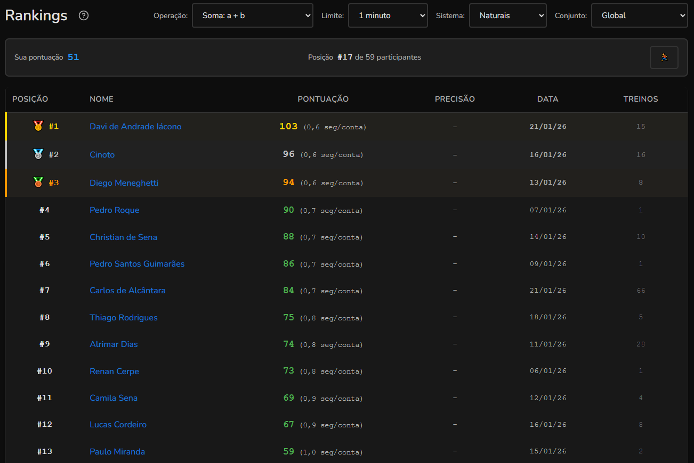
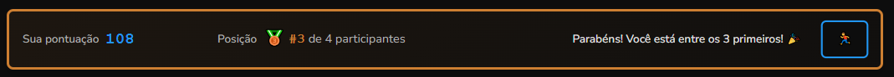
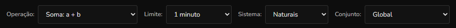

Sobre os rankings no Numix
Visão geral
Na página de rankings você tem os recordes no Numix para cada tipo de treino (operação + limite + sistema).

Sua posição no ranking
No topo da página há um quadro mostrando sua posição atual no ranking filtrado, junto com o total de participantes.

Filtros de ranking
Na parte superior da página você encontra filtros para escolher qual ranking deseja visualizar. Você precisa escolher uma operação, um limite e um sistema.
Ao participar de pelo menos um conjunto, também verá um filtro de conjuntos para esclolher entre ver apenas os elementos desse conjunto ou o ranking global do Numix.

Critérios de desempate
Quando dois usuários possuem a mesma pontuação, o desempate é feito usando os seguintes critérios, nesta ordem:
1. Quantidade de erros
O usuário com menos erros realizados fica em posição melhor.
2. Quantidade de treinos
O usuário com menos treinos realizados fica em posição melhor.
3. Data do recorde
Se ainda houver empate, o recorde mais antigo é recompensado por ter alcançado a pontuação primeiro.
Ver recordes de outros usuários no Numix
Ao clicar no nome de um usuário no ranking, você será redirecionado para a página de recordes dele. Isso permite:
- Ver todas as configurações que ele já treinou;
- Comparar seus recordes com os dele;
- Descobrir novas configurações de treino para tentar;
- Aprender com os melhores praticantes.
Privacidade no ranking
Você pode configurar seu perfil para não mostrar seus recordes no ranking global. Quando essa opção está ativada:
- Seus recordes não aparecem nos rankings globais;
- Você ainda pode ver os rankings de outros usuários;
- Seus recordes continuam salvos normalmente;
- Você ainda aparece em rankings de conjuntos dos quais participa.
Para ativar essa opção, acesse seu perfil e configure a preferência de privacidade.